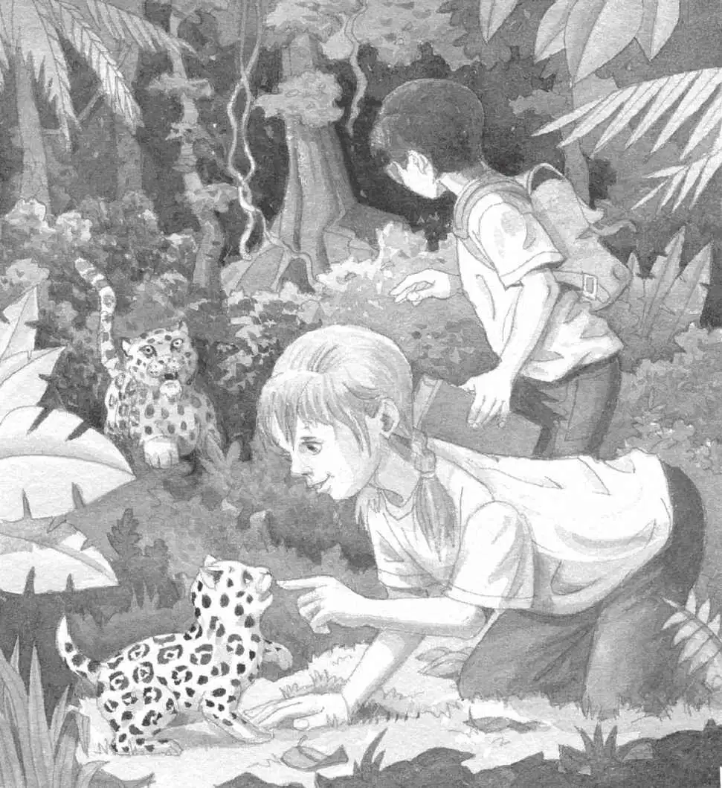

杰克和安妮从独木舟里跳了出来。
雨下得更大了。
小猴子动身离开。它从一棵树荡到另一棵树，顺着岸边往前荡去。它发出吱吱的尖叫，向杰克和安妮示意。
“它要我们跟着它！”安妮说。
“不！我们必须找到那样东西，然后回家！”杰克说。
“它想帮助我们！”安妮说着拔腿去追小猴子。
他们俩消失在了热带雨林里。
“安妮！”杰克喊道。
天空中雷声滚滚。
“唉，真没办法。”杰克说着冲过去追安妮和小猴子。他一头扎进了黑暗的森林。
真令人吃惊，森林里的地面竟然是干的。杰克抬起头。雨还在下，可是树冠就像一把巨大的雨伞。
“安妮？”杰克喊道。
“杰克！杰克！”安妮大叫。
“你在哪儿？”杰克喊道。
“这儿！”安妮大叫。
杰克赶紧朝安妮声音传来的地方冲去。
很快，他就发现了那只小猴子。小猴子尖叫着，从一棵树上荡过来。
安妮跪在森林的地面上。她在跟一只动物玩儿，那只动物看上去就像一只体形巨大的猫。
“那是什么？”杰克问。
“不知道，可是我特别喜欢它！”安妮说。
安妮拍了拍动物的爪子。动物身上的皮毛是金色的，有一些黑色的斑点。
“我得弄清这是什么动物。”杰克说。他掏出那本热带雨林书，开始翻看。
“哎呀，它多可爱啊。”安妮说。
杰克找到了一幅图片，图片上的动物长着带黑色斑点的金色皮毛。他读道：
美洲虎是西半球最大的食肉动物。

“别管它可爱不可爱了，”杰克说，“这肯定是美洲虎的幼崽。它会长大，然后成为最大的食肉动物，在……”
“什么食肉动物？”安妮问道。
“嗷嗷嗷！”不远处传来一声可怕的嗥叫。
杰克迅速转过身。
母美洲虎从一棵树后面走了出来。它悄然无声地踏着落叶，直冲安妮走来。
“别动！”杰克轻声说。
安妮立刻不动了。可是母美洲虎继续慢慢地朝她走来。
“救命啊。”杰克轻声呼救。
突然，那只小猴子从树上俯冲下来，一把抓住了母美洲虎的尾巴！
母美洲虎大吼一声，转过身去。
安妮赶紧跳开。
小猴子又拽了一下母美洲虎的尾巴，然后一松手逃走了。
母美洲虎纵身追了过去。
“快跑，安妮！”杰克喊道。
杰克和安妮在热带雨林里一路狂奔。他们是在逃命啊！